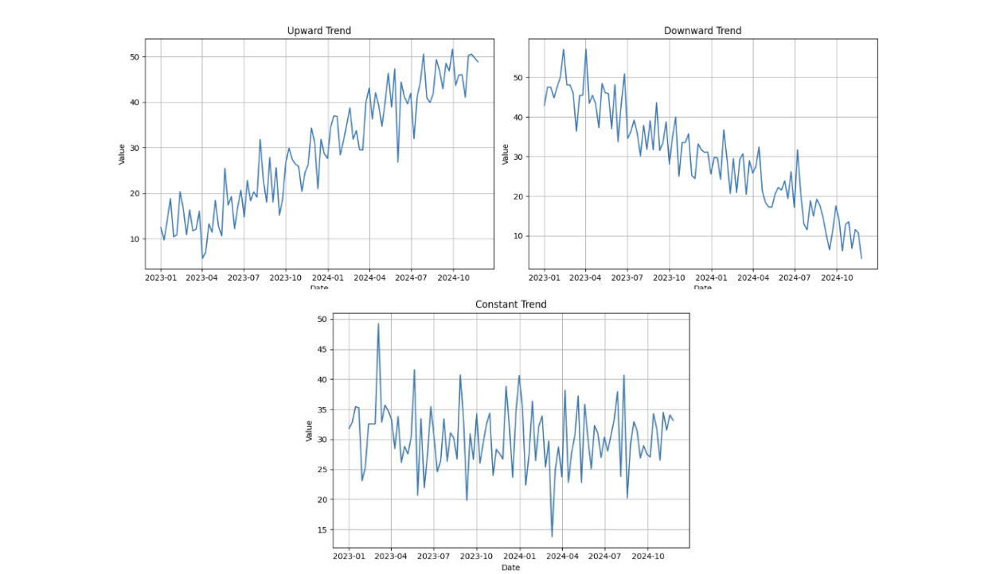
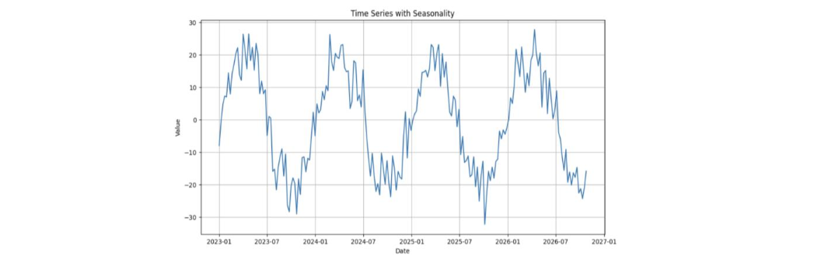
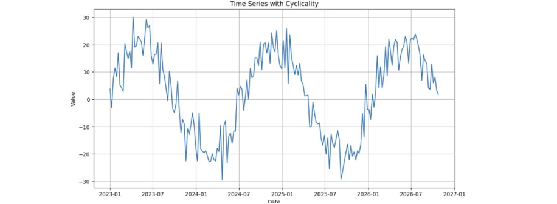
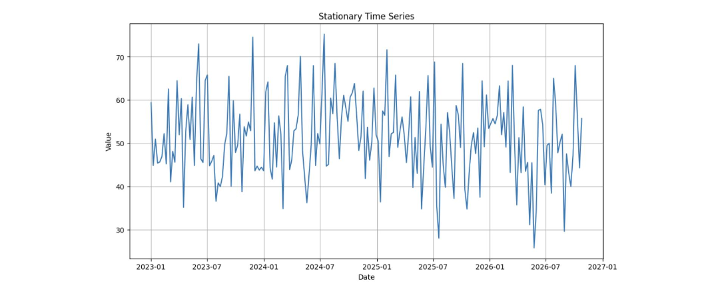

Time Series Analysis and Forecasting
CCS 247 - Machine Learning
Introduction to Time Series
A time series is a sequence of data points collected or recorded at successive points in time. Unlike traditional machine learning datasets where rows are often treated as independent, time series data has a crucial dependency: the order of observations.
Time Series is a collection of observations made sequentially over time where temporal ordering matters and past values influence future values.
Ignoring this temporal order leads to inaccurate models. For example, predicting stock prices without considering the sequence of past prices is inherently flawed.
Examples of Time Series Data
- Stock prices
- Temperature readings
- Sales figures
- Website traffic
- Sensor data
Components of a Time Series
- Trend - Long-term movement (upward, downward, or constant). 
- Seasonality - Regular, predictable patterns that repeat over fixed intervals (e.g., daily, weekly, yearly). 
- Cyclicality - Longer-term fluctuations that are not necessarily periodic (e.g., business cycles). 
- Irregular/Residual - Random, unpredictable noise.
Stationarity
A stationary time series has statistical properties (mean, variance) that are constant over time.
Why it matters - Many time series models assume stationarity.
Most real-world time series are non-stationary. Trends, seasonality, and cyclical patterns violate the assumption of constant statistical properties.
How to check
- Visual inspection of the plot.
- Statistical tests (e.g., Augmented Dickey-Fuller (ADF) test, KPSS test).
Transformations to achieve stationarity
- Differencing: Subtracting consecutive observations.
- Log transformation: Reduces variance.
- Seasonal differencing: Subtracting observations from the same season in the previous period.
Time Series Decomposition
Time series decomposition involves separating a time series into its constituent components (trend, seasonality, etc.).
Decomposition Methods
- Additive Decomposition \[ Y(t) = \text{Trend}(t) + \text{Seasonality}(t) + \text{Residual}(t) \]
- Multiplicative Decomposition \[ Y(t) = \text{Trend}(t) \times \text{Seasonality}(t) \times \text{Residual}(t) \]
- Seasonal Decomposition of Time Series by Loess (STL) - Robust and flexible method, can handle complex seasonality.
Applications of Decomposition
- Understanding the underlying patterns
- Improving forecasting accuracy
- Identifying anomalies
Forecasting Methods
Statistical Methods
- Moving Average (MA) - Smooths out short-term fluctuations.
- Exponential Smoothing (ES) - Assigns exponentially decreasing weights to past observations.
- Simple ES: For time series with no trend or seasonality.
- Holt's Linear ES: For time series with trend.
- Holt-Winters ES: For time series with trend and seasonality.
- Autoregressive Integrated Moving Average (ARIMA) -
- Combines autoregressive (\( \text{AR} \)), differencing (\( \text{I} \)), and moving average (\( \text{MA} \)).
- \( \text{ARIMA}(p, d, q) \): Parameters represent the order of \( \text{AR} \), \( \text{I} \), and \( \text{MA} \) components.
- \( p \) (Autoregressive order): Number of lag observations included in the model.
- \( d \) (Differencing order): Number of times the raw observations are differenced.
- \( q \) (Moving average order): Number of lagged forecast errors included in the model.
- \( \text{SARIMA}(p, d, q)(P, D, Q)_s \): Seasonal ARIMA, accounts for seasonality.
- Vector Autoregression (VAR) - For forecasting multiple time series simultaneously.
Machine Learning Methods
- Regression Models
- Linear regression, polynomial regression, etc., with time-lagged features.
- Feature engineering is crucial.
- Tree-Based Models
- Random forests, gradient boosting (e.g., XGBoost, LightGBM).
- Can capture non-linear relationships.
- Feature engineering is very important.
- Recurrent Neural Networks (RNNs)
- Designed for sequential data.
- Long Short-Term Memory (LSTM) and Gated Recurrent Unit (GRU) networks are commonly used.
- Can capture long term dependencies.
- Temporal Convolutional Networks (TCNs)
- Convolutional networks designed for time series.
- Can be faster than RNN's.
- Transformers
- Originally designed for natural language processing, but can be adapted to time series.
- Attention mechanisms can capture long-range dependencies.
Model Selection and Evaluation
Train-Test Split
- Split the time series into training and testing sets.
- Use a rolling or expanding window approach to preserve temporal order.
Evaluation Metrics
- Mean Absolute Error (MAE) - Average absolute difference between predicted and actual values.
- Mean Squared Error (MSE) - Average squared difference between predicted and actual values.
- Root Mean Squared Error (RMSE) - Square root of MSE.
- Mean Absolute Percentage Error (MAPE) - Average percentage difference between predicted and actual values.
- Symmetric Mean Absolute Percentage Error (sMAPE) - variant of MAPE.
Model Selection Techniques
- Cross-validation - Time series cross-validation (e.g., rolling forecast origin).
- Information criteria - AIC, BIC (for ARIMA models).
- Hyperparameter tuning - Grid search, random search, Bayesian optimization.
Residual Analysis
Check for autocorrelation and heteroscedasticity in the residuals. Ensure residuals are white noise.
Practical Considerations
Data Preprocessing
- Handling missing values
- Outlier detection and treatment
- Feature engineering (e.g., lag features, rolling statistics)
Feature Engineering
- Creating lag features
- Rolling mean, rolling standard deviation
- Time based features (day of week, month, etc.)
Forecasting Horizon
- Short-term vs. long-term forecasting
- The accuracy of forecasts generally decreases with longer horizons
Uncertainty Quantification
- Confidence intervals
- Prediction intervals
- Bootstrapping
External factors such as weather data and economic indicators can also be incorporated as exogenous variables in forecasting models.